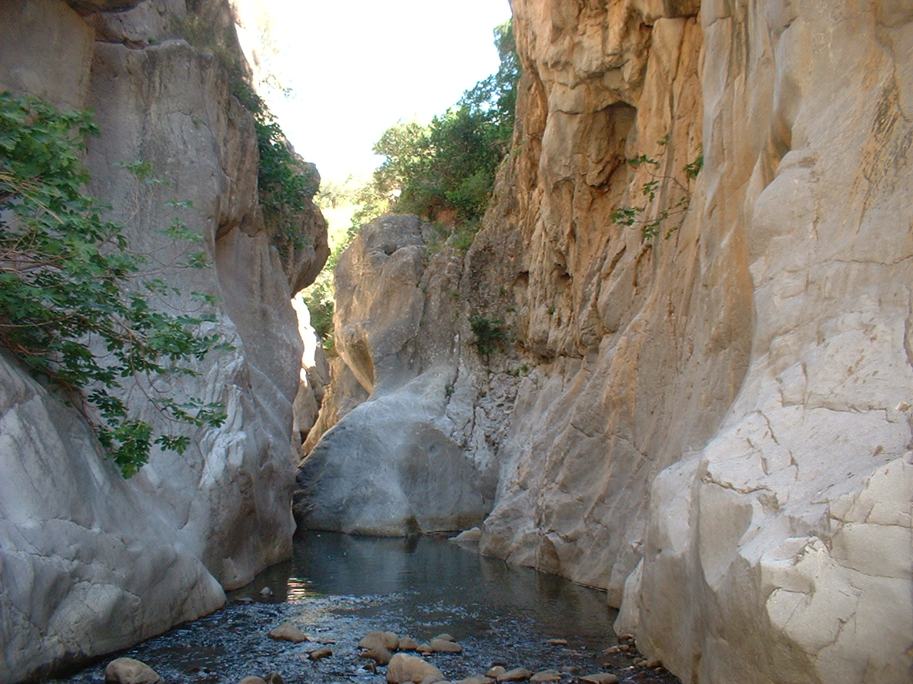

Gole di Tiberio

ITALIANO - Gola fluvio‐carsica incisa dal Fiume Pollina su rocce calcaree appartenenti al Dominio Panormide. Oltre a godere della bellezza paesaggistica del sito è possibile fruire di un servizio di navigazione fluviale per l’attraversamento del restringimento naturale. (Giura sup. – Cretaceo)
ENGLISH - Karst river canyon carved by the Pollina River on calcareous rocks belonging to the Panormide Dominion. Apart from enjoying the scenic beauty of the site you can enjoy a river navigation service for the natural narrowing. (Giura sup. – Cretaceo)